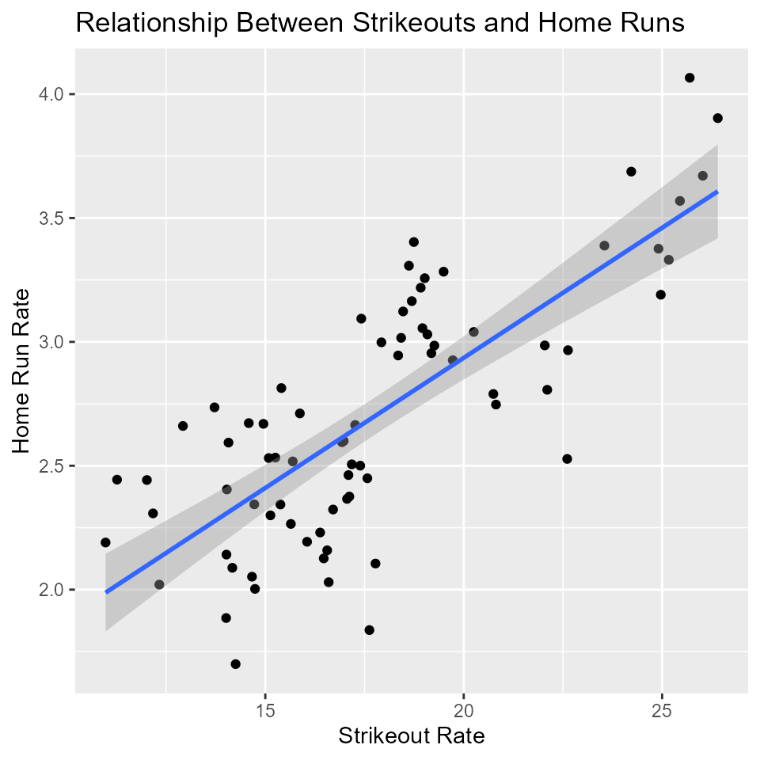

Relationship Between Strikeouts and Home Runs
Vanessa Foot and Justeena Zaki-Azat
2025-09-08
Source:vignettes/strikeoutsandhr.Rmd
strikeoutsandhr.RmdThis vignette looks at the relationship between rate of strikeouts and home runs from the year 1950+. This question was inspired by Marchi and Albert (2016), “Analyzing Baseball Data in R.”
There are many factors that must come together for a player to launch a home run. One of those factors is swing speed—against a 94-mph fastball, every 1-mph increase in swing speed extends distance about 8 feet (Coburn, 2009). If a batter hits ~50 home runs in a season, is it safe to assume that he’s swinging for the fences, and also more likely to strike out? Babe Ruth broke the record of most home runs in a season (60) and also struck out more than any other player (89). However, in 1971, Willie Stargell hit 48 home runs and struck out 154 times, while Henry Aaron hit 47 home runs and struck out 58 times, demonstrating that home runs and strikeouts do not always go hand in hand.
The data files
Start with loading the files we will use here. We do some pre-processing to make them more convenient for the analyses done later.
The Batting data
The Batting table contains batting data at the team
level going back to 1871, with a separate observation from each year.
This file is available using the newest v. 13.0.0, of the
Lahman package. We use this to get everything we need for
our analysis: at bats (AB) strikeouts (SO), and home runs (HR) for all
teams since the year 1950+.
data("Batting", package="Lahman") # load the data
str(Batting) # take a look at the structure of the complete data set, as it is
## 'data.frame': 115450 obs. of 22 variables:
## $ playerID: chr "aardsda01" "aardsda01" "aardsda01" "aardsda01" ...
## $ yearID : int 2004 2006 2007 2008 2009 2010 2012 2013 2015 1954 ...
## $ stint : int 1 1 1 1 1 1 1 1 1 1 ...
## $ teamID : Factor w/ 149 levels "ALT","ANA","ARI",..: 117 35 33 16 116 116 93 94 4 80 ...
## $ lgID : Factor w/ 7 levels "AA","AL","FL",..: 5 5 2 2 2 2 2 5 5 5 ...
## $ G : int 11 45 25 47 73 53 1 43 33 122 ...
## $ AB : int 0 2 0 1 0 0 0 0 1 468 ...
## $ R : int 0 0 0 0 0 0 0 0 0 58 ...
## $ H : int 0 0 0 0 0 0 0 0 0 131 ...
## $ X2B : int 0 0 0 0 0 0 0 0 0 27 ...
## $ X3B : int 0 0 0 0 0 0 0 0 0 6 ...
## $ HR : int 0 0 0 0 0 0 0 0 0 13 ...
## $ RBI : int 0 0 0 0 0 0 0 0 0 69 ...
## $ SB : int 0 0 0 0 0 0 0 0 0 2 ...
## $ CS : int 0 0 0 0 0 0 0 0 0 2 ...
## $ BB : int 0 0 0 0 0 0 0 0 0 28 ...
## $ SO : int 0 0 0 1 0 0 0 0 1 39 ...
## $ IBB : int 0 0 0 0 0 0 0 0 0 NA ...
## $ HBP : int 0 0 0 0 0 0 0 0 0 3 ...
## $ SH : int 0 1 0 0 0 0 0 0 0 6 ...
## $ SF : int 0 0 0 0 0 0 0 0 0 4 ...
## $ GIDP : int 0 0 0 0 0 0 0 0 0 13 ...We are only using part of the table, so we will filter the data set to include only the variables that we need.
We’ll also create a new data frame that includes data from the year 1950+. The Batting table also has multiple listings for each year, so we’ll collapse them using the summarize function.
Last, we will mutate the variables so that home runs and strikeouts are divided by at bat, to add new columns “SO rate” and “HR rate.” This full data frame will be called FullBatting.
Batting <- Batting %>%
select(yearID, AB, SO, HR) %>% # select the variables that we need
group_by(yearID) %>% # group by year, so that each row is one year
summarise_each(funs(sum)) # we want the sum of AB, HR, and SO in the other rows
FullBatting<- Batting %>% # create a new variable that has SO rate and HR rate
filter(yearID >= 1950) %>% # select the years from 1900+
mutate(SO_rate = (SO/AB)*100, HR_rate = (HR/AB)*100) #add SO rate and HR rate as percentages to our data frame
some(FullBatting) # look at a set of random observations
## # A tibble: 10 × 6
## yearID AB SO HR SO_rate HR_rate
## <int> <int> <int> <int> <dbl> <dbl>
## 1 1953 84997 10213 2076 12.0 2.44
## 2 1954 83936 10215 1937 12.2 2.31
## 3 1958 83827 12225 2240 14.6 2.67
## 4 1963 109814 18773 2704 17.1 2.46
## 5 1965 109739 19283 2688 17.6 2.45
## 6 1971 130544 20956 2863 16.1 2.19
## 7 1977 143975 21722 3644 15.1 2.53
## 8 1987 144095 25099 4458 17.4 3.09
## 9 2005 166335 30644 5017 18.4 3.02
## 10 2011 165705 34488 4552 20.8 2.75
dim(FullBatting) # show the dimensions of the data frame
## [1] 75 6##A first look at ‘Batting’
What is the total number of strikeouts in our data set?
sum(FullBatting$SO) # find the sum of strikeout column
## [1] 1858902What is the average rate of strikeouts per at bat?
mean(FullBatting$SO_rate) # find the mean of the strikeout rate column
## [1] 17.78How many homeruns do we have in our data set?
sum(FullBatting$HR) # find the sum of home run column
## [1] 279726What is the average rate of home runs per at bat?
mean(FullBatting$HR_rate) # find the mean of the home run rate column
## [1] 2.703Is there a relationship between strikeout rate and home run rate? According to our test, there is a significant correlation. The p-value is equal to .001, with df= 65. There is a .61 correlation between strikeout rate and home run rate.
corr <- cor.test(FullBatting$SO_rate, FullBatting$HR_rate)
corr # find the correlation between strikeout rate and home run rate
##
## Pearson's product-moment correlation
##
## data: FullBatting$SO_rate and FullBatting$HR_rate
## t = 10, df = 73, p-value = 6e-16
## alternative hypothesis: true correlation is not equal to 0
## 95 percent confidence interval:
## 0.6593 0.8493
## sample estimates:
## cor
## 0.7709We can look at the totals for interpretation purposes. We see here that for every 6.14 strikeouts, home runs increase by 4.14.
Model_Totals <- lm(SO_rate~HR_rate, data=FullBatting)
summary(Model_Totals) # look at the model totals
##
## Call:
## lm(formula = SO_rate ~ HR_rate, data = FullBatting)
##
## Residuals:
## Min 1Q Median 3Q Max
## -5.055 -1.697 -0.122 1.549 5.816
##
## Coefficients:
## Estimate Std. Error t value Pr(>|t|)
## (Intercept) 2.485 1.505 1.65 0.1
## HR_rate 5.660 0.547 10.34 6e-16 ***
## ---
## Signif. codes: 0 '***' 0.001 '**' 0.01 '*' 0.05 '.' 0.1 ' ' 1
##
## Residual standard error: 2.4 on 73 degrees of freedom
## Multiple R-squared: 0.594, Adjusted R-squared: 0.589
## F-statistic: 107 on 1 and 73 DF, p-value: 6e-16Create a scatterplot in ggplot, using SO rate and HR rate.
plot <- ggplot(FullBatting, aes(x= SO_rate, y= HR_rate))+
geom_point()+
xlab("Strikeout Rate") +
ylab("Home Run Rate") +
ggtitle("Relationship Between Strikeouts and Home Runs")
plot + stat_smooth(method= "lm") ##stat_smooth fits the model and then we plot the linear regression model